franciemalina.com is cited in Google AI Overview for 4 different query types: neighborhood guides, real estate market, and relocation queries. "Heathcote neighborhood guide" achieves the golden combination (#1 organic + AI Overview), while "moving to Scarsdale" (#2) and "Scarsdale real estate market guide" (#6) prove AI Overview can cite sources below #1.
This audit evaluates franciemalina.com visibility across AI-powered search platforms. The team has excellent AI visibility overall (40+ citations across platforms), with particularly strong performance on real estate and relocation queries. Perplexity AI remains the strongest platform with citations on all 7 queries tested.
franciemalina.com is cited in Google AI Overview for 4 different query types: neighborhood guides, real estate market, and relocation queries. The Ultimate Guide to Scarsdale serves as the primary source for market and relocation queries.
| Query | Organic Rank | AI Overview | Content Cited |
|---|---|---|---|
| "Heathcote Scarsdale NY neighborhood guide" | #1 | CITED | Heathcote Neighborhood Guide |
| "best neighborhoods in Scarsdale NY for families" | #4 | CITED | Ultimate Guide to Scarsdale |
| "moving to Scarsdale NY guide" | #2 | CITED | Ultimate Guide to Scarsdale |
| "Scarsdale real estate market guide" | #6 | CITED | Ultimate Guide to Scarsdale |
| Query: | "Heathcote Scarsdale NY neighborhood guide" |
| Organic Rank: | #1 |
| AI Overview: | CITED |
| Perplexity: | 3+ Citations |
| ChatGPT: | 5 Citations |
franciemalina.com is cited on ALL 7 queries tested. Perplexity consistently uses Francie Malina content as a primary source regardless of organic ranking position. Particularly strong on real estate and relocation queries.
| Query | Citations | Sections Cited |
|---|---|---|
| "Fox Meadow Scarsdale NY neighborhood" | 8+ | Overview, Housing, Schools, Quick Snapshot Table (5x) |
| "best neighborhoods in Scarsdale NY for families" | 7+ | Fox Meadow, Heathcote, Quaker Ridge, comparison table |
| "Quaker Ridge Scarsdale neighborhood" | 6+ | Overview, Location, Housing, Schools, Amenities, Commute |
| "Scarsdale real estate market guide" | 4+ | Price Overview Table: Median Sale Price ($1.3M-$2.1M), Price/Sq Ft ($596-$608) |
| "Heathcote Scarsdale NY neighborhood guide" | 3+ | Overview, Housing/Streetscape, Schools |
| "moving to Scarsdale NY guide" | 3+ | Housing Costs ($2M median), Greenacres Neighborhood (commuter charm) |
| "is Scarsdale NY a good place to live" | 1 | Overall quality of life section |
ChatGPT cites "The Francie Malina Team | Compass" with direct links to neighborhood guides. Strongest performance on Heathcote guide (5 citations) including Overview, Real Estate pricing, Schools, and Parks sections.
| Query | Citations | Content Cited |
|---|---|---|
| "Heathcote Scarsdale NY neighborhood guide" | 5 | Overview Real Estate ($3.2M) Schools Heathcote Park Country Clubs |
| "Quaker Ridge Scarsdale neighborhood" | 2 | Scarsdale Pool Complex Fields & Courts |
| "best neighborhoods in Scarsdale NY for families" | 1 | Heathcote Neighborhood Guide |
Bing Copilot strongly cites franciemalina.com for broad queries ("best neighborhoods") but prefers Homes.com and City-Data for specific neighborhood guides.
| Query | Status | Details |
|---|---|---|
| "best neighborhoods in Scarsdale NY for families" | CITED | 6+ citations: Heathcote (2x), Fox Meadow (2x), Quaker Ridge (2x), Featured Source Card |
| "Heathcote Scarsdale NY neighborhood guide" | NOT CITED | Sources used: Homes.com, City-Data.com |
| "Quaker Ridge Scarsdale neighborhood" | RELATED ONLY | Appears in "Related results" but not in main response |
Since launching Total Search optimization on December 23, 2025, franciemalina.com has seen dramatic improvements in organic search visibility.
| Metric | Before Total Search (11/22 - 12/22/25) |
After Total Search (12/23/25 - 1/21/26) |
Change |
|---|---|---|---|
| Total Impressions | 11,200 | 22,200 | +98% ↑ |
| Total Clicks | 235 | 298 | +27% ↑ |
| Average Position | 9.7 | 8.3 | +1.4 positions ↑ |
| Click-Through Rate | 2.1% | 1.3% | -0.8% |
The CTR decrease is expected and healthy when impressions nearly double. The site is now ranking for significantly more queries at various positions, which dilutes CTR but results in more total clicks and visibility. This is a positive indicator of expanded search presence.
Before Total Search, franciemalina.com had ZERO impressions for Scarsdale-related queries. In just 30 days, the site now ranks for 10+ Scarsdale queries with over 1,500 total impressions.
| Query | Before (11/22-12/22) |
After (12/23-1/21) |
Change |
|---|---|---|---|
| "scarsdale" | 0 | 477 | +477 NEW |
| "scarsdale new york" | 0 | 343 | +343 NEW |
| "44 alkamont ave scarsdale ny" | 0 | 123 | +123 NEW |
| "scarsdale ny" | 0 | 103 | +103 NEW |
| "scarsdale ny county" | 0 | 93 | +93 NEW |
| "what county is scarsdale ny in" | 0 | 78 | +78 NEW |
| "scarsdale, new york" | 0 | 68 | +68 NEW |
| "109 lee road scarsdale" | 0 | 65 | +65 NEW |
| "where is scarsdale ny" | 0 | 49 | +49 NEW |
| "scarsdale ny zip code" | 0 | 48 | +48 NEW |
| Total Scarsdale Queries | 0 | 1,447+ | +1,447 NEW |
| Query | Before | After | Change |
|---|---|---|---|
| "tarrytown realtor" | 233 | 485 | +252 (+108%) |
| "compass" | 106 | 159 | +53 (+50%) |
| "bronxville" | 33 | 62 | +29 (+88%) |
| "realtors in westchester" | 22 | 42 | +20 (+91%) |
| "compass westchester" | 24 | 39 | +15 (+63%) |
Organic search has nearly doubled its share of total site traffic since launching Total Search, with significant improvements in engagement quality.
| Metric | Before Total Search (Nov 25 - Dec 24, 2025) |
After Total Search (Dec 23, 2025 - Jan 21, 2026) |
Change |
|---|---|---|---|
| Organic Sessions | 245 | 298 | +21.6% ↑ |
| Engaged Sessions | 216 | 291 | +34.7% ↑ |
| Active Users | 270 | 324 | +20% ↑ |
| Avg Engagement Time | 29 seconds | 1h 59m | Massive ↑ |
| Engagement Rate | 90.74% | 91.98% | +1.4% ↑ |
| Bounce Rate | 9.26% | 8.02% | -13.3% ↓ (better) |
| Share of Total Traffic | 15.35% | 28.46% | Nearly 2x ↑ |
The organic search traffic is not just growing in volume - it's growing in quality. Higher engagement time, better engagement rate, and lower bounce rate indicate that the new Scarsdale content is attracting the right audience who find value in the content.
The following screenshots captured on January 21, 2026 show franciemalina.com citations across AI search platforms. Click any image to view full size.
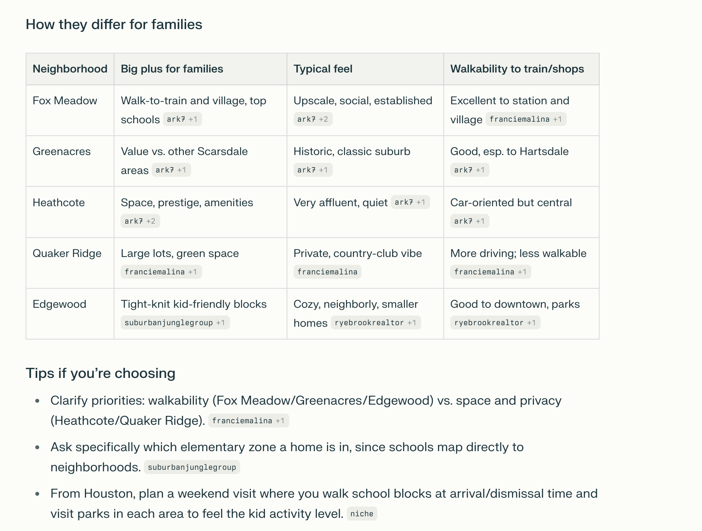
franciemalina.com cited in AI Overview sources panel
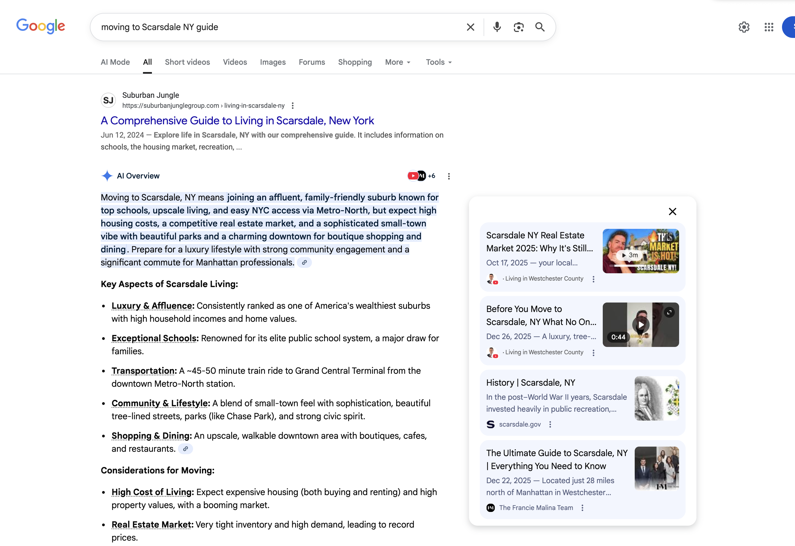
The Ultimate Guide to Scarsdale cited as source
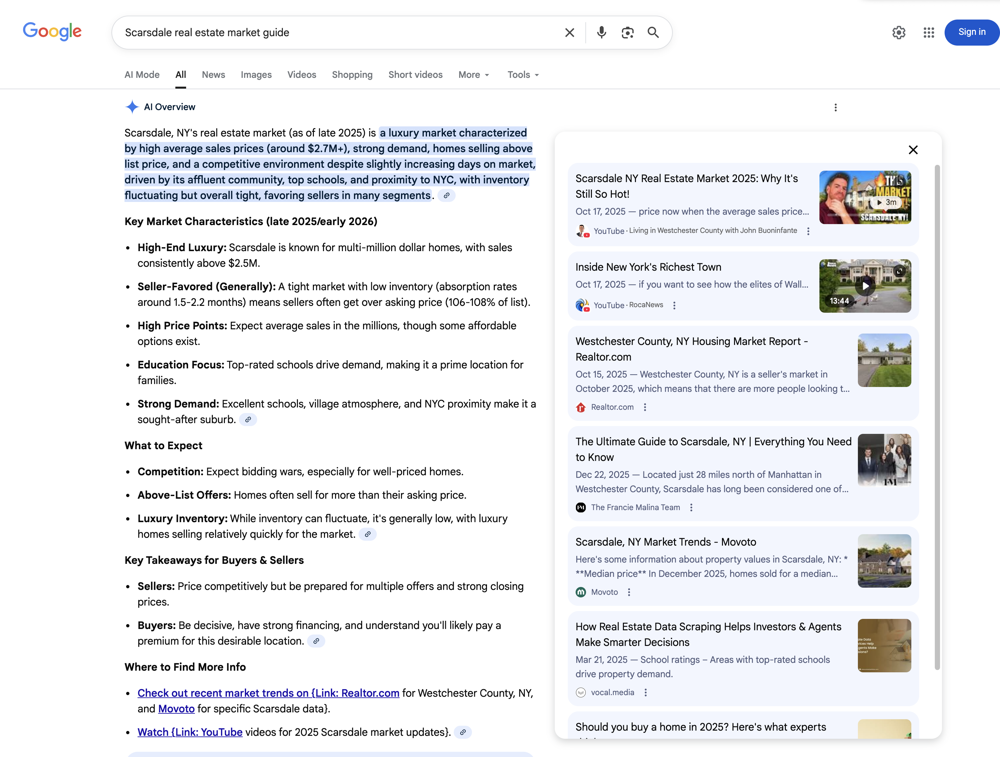
franciemalina.com cited for market data
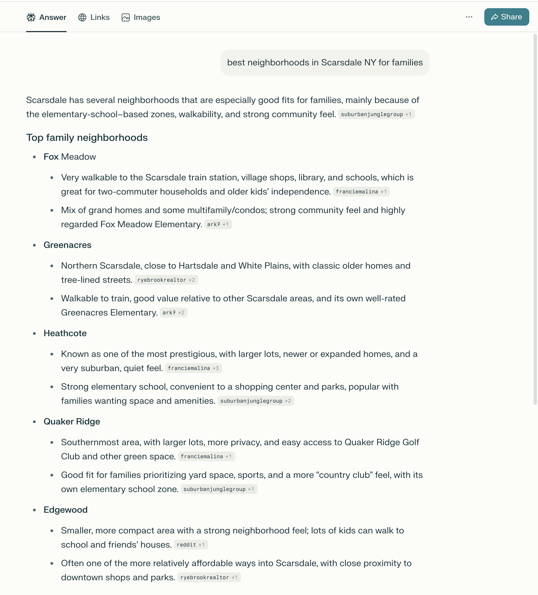
franciemalina.com appears as featured source alongside BestNeighborhood.org
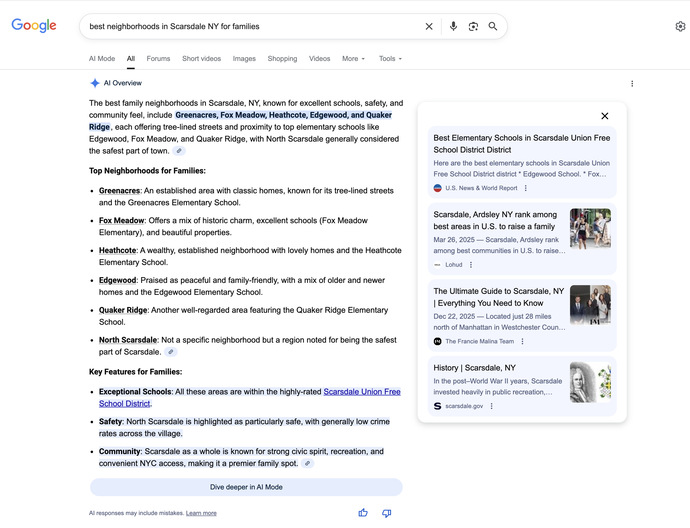
Multiple franciemalina +1 and +3 citations throughout response
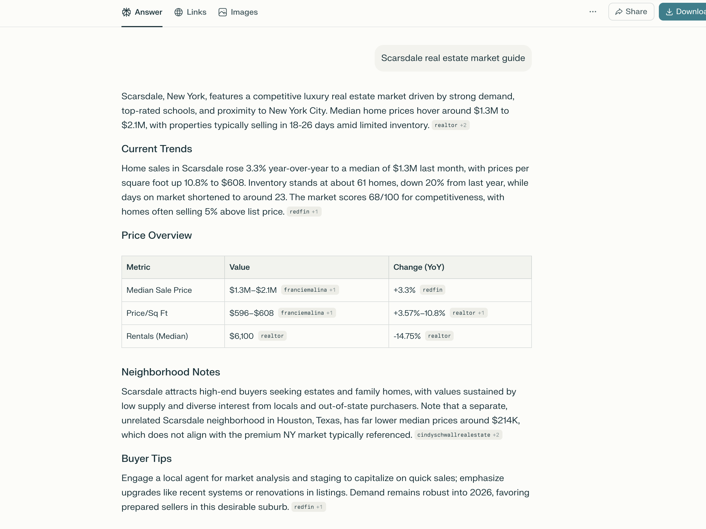
Price Overview table cites franciemalina for Median Sale Price and Price/Sq Ft
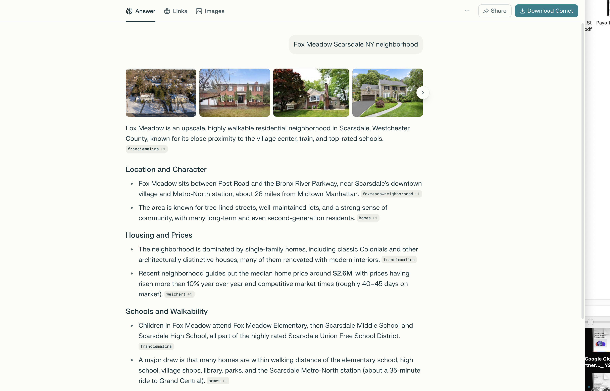
8+ citations: Overview, Housing, Schools sections all cite franciemalina
6+ citations across Overview, Location, Housing, Schools, Amenities
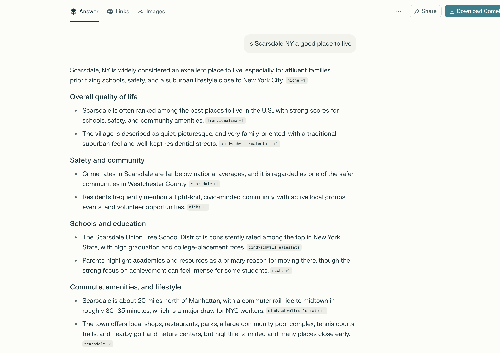
franciemalina +1 citation in quality of life section
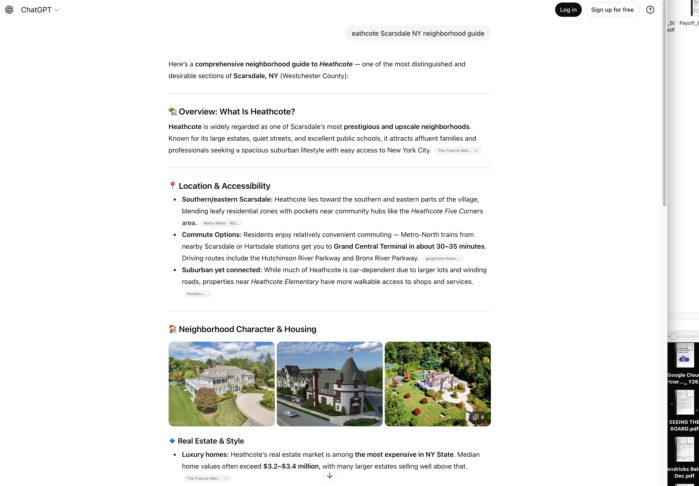
5 citations: Overview, Real Estate ($3.2M), Schools, Heathcote Park
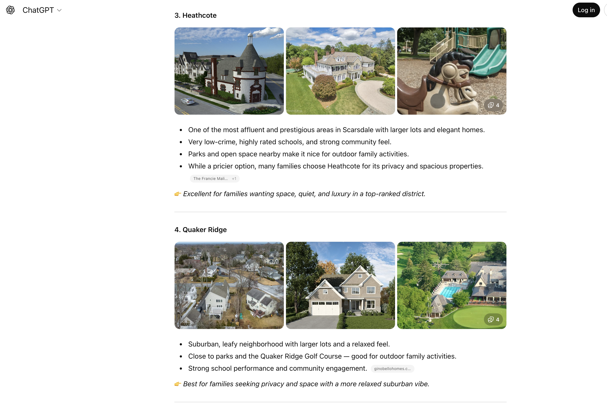
"The Francie Mali... +1" citation for Heathcote neighborhood
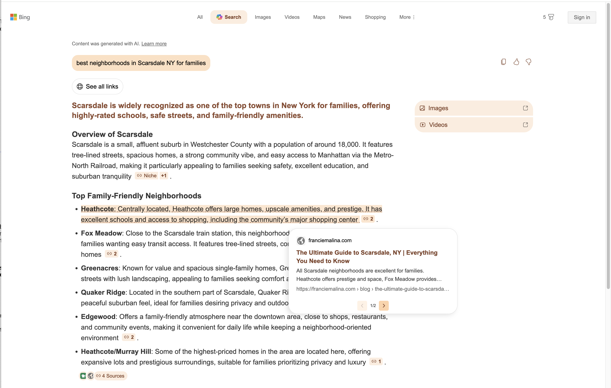
Popup showing "The Ultimate Guide to Scarsdale" from franciemalina.com